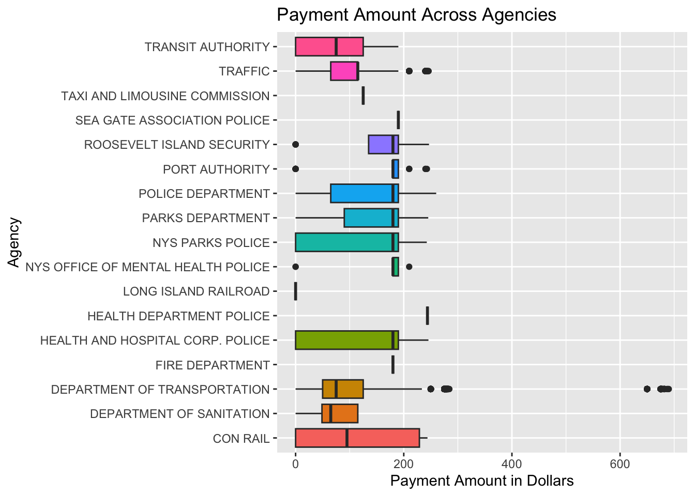
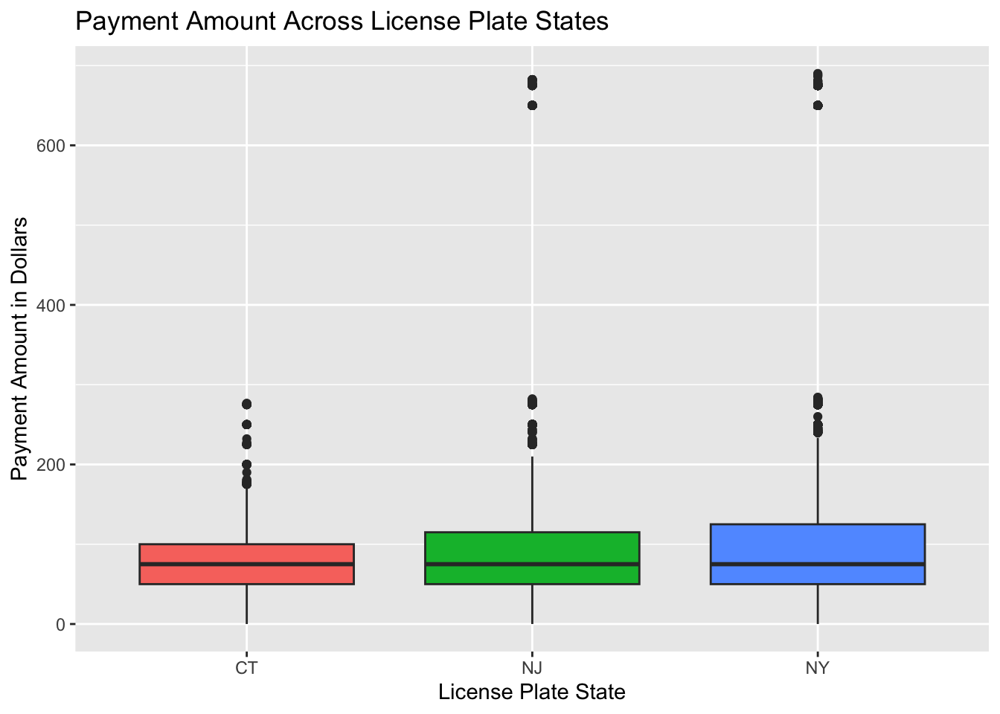
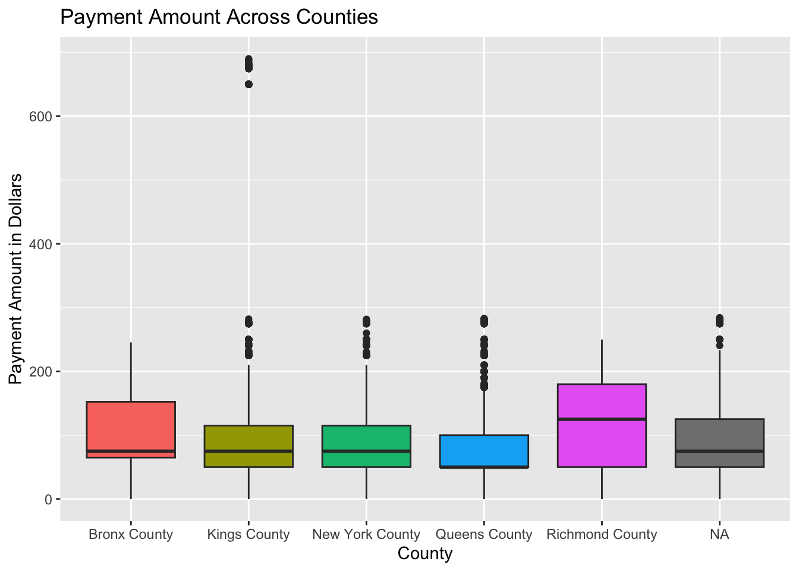

library(tidyverse)
library(httr)
library(jsonlite)
library(supernova)
library(AICcmodavg)
library(mosaic)
library(knitr)Assignment 2 - Law Firm Analysis
Introduction
I have been hired as a data scientist by a law firm that specializes in fighting parking and camera tickets. The firm wants to work on their marketing strategy and have asked me to look at patterns in NYC violation data that can better inform them. So far, I have looked at day of the week, time of day, and violation type. Unfortunately, there was nothing of much significance there. Now, I will be looking into three more variables- issuing agency, the state the driver is from that received the violation, and the county the violation was issued in- and how these variables affect payment amount. Here is the dataset I am using: NYC Parking and Camera Violation
Uploading and Cleaning the Data
endpoint<-"https://data.cityofnewyork.us/resource/nc67-uf89.json"
resp <- GET(endpoint, query = list(
"$limit" = 99999,
"$order" = "issue_date DESC"
))
camera <- fromJSON(content(resp, as = "text"), flatten = TRUE)camera <- camera %>%
mutate(across
(c("fine_amount", "interest_amount", "reduction_amount", "payment_amount", "amount_due"),
~as.numeric(.)
))
camera <- camera %>%
filter(str_detect(issue_date, "^\\d{4}-\\d{2}-\\d{2}T"))
camera <- camera %>%
mutate(county = dplyr::recode(county,
"Q" = "Queens County",
"K" = "Kings County",
"BX" = "Bronx County",
"NY" = "New York County",
"R" = "Richmond County",
"QN" = "Queens County",
"MN" = "New York County",
"BK" = "Kings County",
"ST" = "Richmond County",
"Bronx" = "Bronx County",
"Kings" = "Kings County",
"Qns" = "Queens County",
"RICH" = "Richmond County"))
camera <- camera %>% rename('plate_state' = 'state')
camera <- camera %>% rename('agency' = 'issuing_agency')
camera_states <- camera %>%
filter(plate_state == "NJ" | plate_state == "NY" | plate_state == "CT")Agency
Do certain agencies issue higher payments?
Visualization
ggplot(camera, aes(x = agency, y = payment_amount, fill = agency)) + geom_boxplot() + coord_flip() +
labs(title = "Payment Amount Across Agencies",
x = "Agency",
y = "Payment Amount in Dollars") +
theme(legend.position = "none")
Descriptive Statistics
favstats(payment_amount ~ agency, data = camera) %>% arrange(desc(mean)) %>% kable()| agency | min | Q1 | median | Q3 | max | mean | sd | n | missing |
|---|---|---|---|---|---|---|---|---|---|
| HEALTH DEPARTMENT POLICE | 243.81 | 243.81 | 243.81 | 243.8100 | 243.81 | 243.81000 | NA | 1 | 0 |
| SEA GATE ASSOCIATION POLICE | 190.00 | 190.00 | 190.00 | 190.0000 | 190.00 | 190.00000 | 0.00000 | 2 | 0 |
| FIRE DEPARTMENT | 180.00 | 180.00 | 180.00 | 180.0000 | 180.00 | 180.00000 | NA | 1 | 0 |
| NYS OFFICE OF MENTAL HEALTH POLICE | 0.00 | 180.00 | 180.00 | 190.0000 | 210.00 | 161.33333 | 65.99423 | 15 | 0 |
| PORT AUTHORITY | 0.00 | 180.00 | 180.00 | 190.0000 | 242.76 | 150.49319 | 80.53742 | 47 | 0 |
| ROOSEVELT ISLAND SECURITY | 0.00 | 135.00 | 180.00 | 190.0000 | 246.68 | 149.16083 | 90.57967 | 24 | 0 |
| NYS PARKS POLICE | 0.00 | 0.00 | 180.00 | 190.0000 | 242.58 | 142.50970 | 90.27092 | 33 | 0 |
| POLICE DEPARTMENT | 0.00 | 65.00 | 180.00 | 190.0000 | 260.00 | 136.71574 | 82.82498 | 190 | 0 |
| PARKS DEPARTMENT | 0.00 | 90.00 | 180.00 | 190.0000 | 245.28 | 128.47736 | 78.92728 | 144 | 0 |
| TAXI AND LIMOUSINE COMMISSION | 125.00 | 125.00 | 125.00 | 125.0000 | 125.00 | 125.00000 | NA | 1 | 0 |
| HEALTH AND HOSPITAL CORP. POLICE | 0.00 | 0.00 | 180.00 | 190.0000 | 245.64 | 124.71373 | 98.60130 | 51 | 0 |
| CON RAIL | 0.00 | 0.00 | 95.00 | 228.8875 | 243.87 | 112.62000 | 124.87146 | 6 | 0 |
| DEPARTMENT OF TRANSPORTATION | 0.00 | 50.00 | 75.00 | 125.0000 | 690.04 | 99.52878 | 82.88425 | 87272 | 0 |
| TRAFFIC | 0.00 | 65.00 | 115.00 | 115.0000 | 245.79 | 94.59362 | 44.47453 | 12091 | 0 |
| TRANSIT AUTHORITY | 0.00 | 0.00 | 75.00 | 125.0000 | 190.00 | 78.00000 | 82.05181 | 5 | 0 |
| DEPARTMENT OF SANITATION | 0.00 | 48.75 | 65.00 | 115.0000 | 115.00 | 66.25000 | 45.48351 | 12 | 0 |
| LONG ISLAND RAILROAD | 0.00 | 0.00 | 0.00 | 0.0000 | 0.00 | 0.00000 | NA | 1 | 0 |
Inferential Statistics
anova_model_agency<- aov(payment_amount ~ agency, data = camera)summary(anova_model_agency) Df Sum Sq Mean Sq F value Pr(>F)
agency 16 1063475 66467 10.59 <2e-16 ***
Residuals 99879 627057911 6278
---
Signif. codes: 0 '***' 0.001 '**' 0.01 '*' 0.05 '.' 0.1 ' ' 1supernova(anova_model_agency) Analysis of Variance Table (Type III SS)
Model: payment_amount ~ agency
SS df MS F PRE p
----- --------------- | ------------- ----- --------- ------ ----- -----
Model (error reduced) | 1063475.474 16 66467.217 10.587 .0017 .0000
Error (from model) | 627057911.207 99879 6278.176
----- --------------- | ------------- ----- --------- ------ ----- -----
Total (empty model) | 628121386.681 99895 6287.816 Report
Sum of Squares - How much variance is explained?
SSagency = 1063435
SSerror = 627060364
While there is a considerable amount of variability between agencies, there is much more variability within agencies.
F value and P-value - Is it statistically significant?
F = 10.587
P = <2e-16
This is statistically significant (P < 0.05).
NoteStatistical vs. Practical Significance
With a large dataset, even very small differences can produce statistically significant p-values. However, effect sizes (PRE values of 0.1%–1.5%) show that these variables explain very little real-world variation in payment amount.
PRE - What proportion of variance is explained?
Only about 0.17% of the variance in payment amount is explained by the agency that issued the fine.
Interpretation
While the findings of variance in this model were found to be statistically significant, they were not found to be practically significant. The issuing agency does explain a proportion of variance in payment amount, but that proportion is only about 0.17%, which is less than 1% of total variance in payment amount. This is definitely not the most significant difference in the real world. I would not recommend the law firm necessarily use this variable in their marketing strategy, because even if they were able to address each agency, that would still only affect total payment amount by less than 1%.
Plate State
Do drivers from different states (NJ, NY, CT) pay more?
Visualization
ggplot(camera_states, aes(x = plate_state, y = payment_amount, fill = plate_state)) + geom_boxplot() +
labs(title = "Payment Amount Across License Plate States",
x = "License Plate State",
y = "Payment Amount in Dollars") +
theme(legend.position = "none")
Descriptive Statistics
favstats(payment_amount ~ plate_state, data = camera_states) %>% arrange(desc(mean)) %>% kable()| plate_state | min | Q1 | median | Q3 | max | mean | sd | n | missing |
|---|---|---|---|---|---|---|---|---|---|
| NJ | 0 | 50 | 75 | 115 | 682.35 | 101.5746 | 89.97170 | 8654 | 0 |
| NY | 0 | 50 | 75 | 125 | 690.04 | 101.0984 | 80.92892 | 79527 | 0 |
| CT | 0 | 50 | 75 | 100 | 276.57 | 80.6627 | 46.07849 | 1457 | 0 |
Inferential Statistics
anova_model_state<- aov(payment_amount ~ plate_state, data = camera_states)summary(anova_model_state) Df Sum Sq Mean Sq F value Pr(>F)
plate_state 2 603090 301545 45.5 <2e-16 ***
Residuals 89635 593991398 6627
---
Signif. codes: 0 '***' 0.001 '**' 0.01 '*' 0.05 '.' 0.1 ' ' 1supernova(anova_model_state) Analysis of Variance Table (Type III SS)
Model: payment_amount ~ plate_state
SS df MS F PRE p
----- --------------- | ------------- ----- ---------- ------ ----- -----
Model (error reduced) | 603089.883 2 301544.941 45.504 .0010 .0000
Error (from model) | 593991397.710 89635 6626.780
----- --------------- | ------------- ----- ---------- ------ ----- -----
Total (empty model) | 594594487.593 89637 6633.360 Report
Sum of Squares - How much variance is explained?
SSstate = 603061
SSerror = 593994009
While there is a considerable amount of variability between states, there is much more variability within states.
F value and P-value - Is it statistically significant?
F = 45.502
P = <2e-16
This is statistically significant (P < 0.05).
PRE - What proportion of variance is explained?
Only about 0.1% of the variance in payment amount is explained by the states the drivers are from.
Interpretation
Again, while the findings of variance in this model were found to be statistically significant, they were not found to be practically significant. The state the driver is from does explain a proportion of variance in payment amount, but that proportion is only about 0.1%, which is even less than the amount that issuing agency explains. This is, again, definitely not a significant difference in the real world. I would not recommend the law firm use this variable in their marketing strategy, because at best, it would only address less than 1% of the variance in payment amount.
County
Do certain counties tend to have higher payment amounts?
Visualization
ggplot(camera, aes(x = county, y = payment_amount, fill = county)) + geom_boxplot() +
labs(title = "Payment Amount Across Counties",
x = "County",
y = "Payment Amount in Dollars") +
theme(legend.position = "none")
Descriptive Statistics
favstats(payment_amount ~ county, data = camera) %>% arrange(desc(mean)) %>% kable()| county | min | Q1 | median | Q3 | max | mean | sd | n | missing |
|---|---|---|---|---|---|---|---|---|---|
| Richmond County | 0 | 50 | 125 | 180.0 | 250.00 | 114.53669 | 77.55385 | 1349 | 0 |
| Kings County | 0 | 50 | 75 | 115.0 | 690.04 | 110.90567 | 126.20960 | 16108 | 0 |
| Bronx County | 0 | 65 | 75 | 152.5 | 245.64 | 100.38053 | 67.32482 | 244 | 0 |
| New York County | 0 | 50 | 75 | 115.0 | 281.80 | 97.64833 | 62.54609 | 23468 | 0 |
| Queens County | 0 | 50 | 50 | 100.0 | 283.03 | 83.49201 | 60.07357 | 17357 | 0 |
Inferential Statistics
anova_model_county<- aov(payment_amount ~ county, data = camera)summary(anova_model_county) Df Sum Sq Mean Sq F value Pr(>F)
county 4 6694742 1673685 233.1 <2e-16 ***
Residuals 58521 420213429 7181
---
Signif. codes: 0 '***' 0.001 '**' 0.01 '*' 0.05 '.' 0.1 ' ' 1
41370 observations deleted due to missingnesssupernova(anova_model_county) Analysis of Variance Table (Type III SS)
Model: payment_amount ~ county
SS df MS F PRE p
----- --------------- | ------------- ----- ----------- ------- ----- -----
Model (error reduced) | 6694741.856 4 1673685.464 233.086 .0157 .0000
Error (from model) | 420213428.932 58521 7180.558
----- --------------- | ------------- ----- ----------- ------- ----- -----
Total (empty model) | 426908170.788 58525 7294.458 Report
Sum of Squares - How much variance is explained?
SScounty = 6694742
SSerror = 420213429
Again, while there is a considerable amount of variability between counties, there is much more variability within counties.
F value and P-value - Is it statistically significant?
F = 233.1
P = <2e-16
This is statistically significant (p < 0.05).
PRE - What proportion of variance is explained?
About 1.5% of the variance in payment amount is explained by the county the fine was issued in.
Interpretation
Again, while the findings of variance in this model were found to be statistically significant, they were not found to be very practically significant. The county does explain a proportion of variance in payment amount, but that proportion is only about 1.5%. Though not a high percentage of variance explained by any means, it is the highest percentage we have found thus far! It is also likely not very significant of a difference in the real world. I would also not recommend this as the best variable for the firm to use in their marketing strategy, since it would only address 1.5% of the variance in payment amount.
Final Statement
If the law firm only had these three variables (agency, state, or county) as options to use in their marketing strategy, I would suggest prioritizing county since it accounts for the largest amount of variance in payment amount out of all three variables.